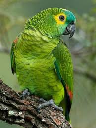

Meu papagaio favorito! Amazona aestiva (L.), conhecido vulgarmente como papagaio-verdadeiro, ajuruetê, papagaio-grego[1], ajurujurá, curau[2],
papagaio-comum, papagaio-curau, papagaio-de-fronte-azul, papagaio-boiadeiro, trombeteiro e louro, como, inclusive, são chamados todos os papagaios domesticados em nosso País,
é uma ave da família Psittacidae. É nativa do Brasil oriental[3].
Clique para saber mais